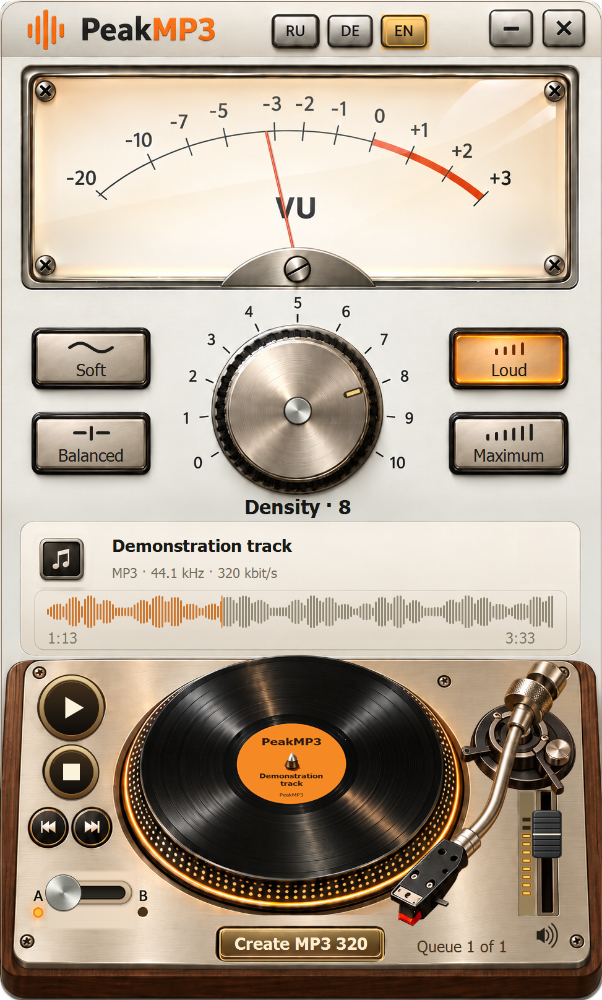

Start with your source
Open AAC, MP3, WAV or FLAC. YouTube transfers use original AAC.
PeakMP3 · 0.16.0 Preview
Analog character. Compare with your original and save your MP3.
Shared installer with YouTube Downloader

Open AAC, MP3, WAV or FLAC. YouTube transfers use original AAC.
The density knob and A/B switch help you find the setting you like.
The save dialog starts on Desktop. You can choose another folder.
Three short music examples. Choose a track, press Play on the turntable and turn the PeakMP3 knob.
Try the knob, presets, A/B and transport. Seek on the waveform and adjust volume with the fader on the right.
Density levels 0–10 were prepared with PeakMP3 0.16.0. A is the original excerpt, B the selected processing. This demo does not process your files in the browser.
24-second excerpts: trimming, PeakMP3 processing and MP3 encoding. Music licensing is separate from application terms.
Try the knob, presets, A/B and transport. Seek on the waveform and adjust volume with the fader on the right.